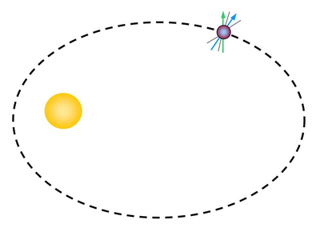

Pulsars that orbit another significant physical object are referred to as binary pulsars. Usually the companion is a star, but not exclusively so. The main classes of binary pulsars are:
- High-mass eccentric binaries. These binaries have companions which are main sequence B or Be stars of around 10 solar mass (M⊙). They have long orbital periods of several weeks to several years and often have highly eccentric orbits. An example is the binary pulsar PSR B1259-63.
- Circular white dwarf binaries have degenerate white dwarf companions, with masses between ~ 0.1 and 1.2 M⊙. In many cases the pulsar is a millisecond pulsar born from a previous episode of recycling, and generally these binaries have exceptionally circular orbits. Two examples are the binary pulsars PSR J0437-4715 and PSR J1157-5112.
- Neutron star-neutron star binary pulsars have short orbital periods and eccentric orbits. They provide one of the strongest tests for theories of relativistic gravity. An example of this type of binary pulsar is the celebrated PSR B1913+16, whose orbit is decaying due to the emission of gravitational radiation.
- Eccentric white dwarf + pulsar systems. These systems have a young, ‘non-recycled’ pulsar in orbit around a white dwarf companion. Their evolution is special, in that the white dwarf formed before the pulsar. This requires special initial conditions and mass transfer to have taken place. An example is PSR J1141-6545, a 4.8 hour binary in an eccentric orbit.
- Double pulsars. These systems have two visible pulsars. The first of these (PSR J0737-3039) was only discovered in 2003 and is the most relativistic system known. This system is very important to test the theory of general relativity, and to measure the coalescence rate of neutron star pairs.
- The ‘black widow’ pulsars. These have short orbital periods (less than a day) and contain feeble, low-mass ( ~ 0.02 M⊙) non-degenerate stars. Examples are PSR B1957+20 and PSR J2051-0827.
- The ‘planet’ pulsars. It is debatable whether these pulsars are ‘true’ binaries or not, but their orbits can be described by Kepler’s laws of motion. The most exciting system is PSR B1257+12. It possesses three planets, one of which is not much heavier than a moon.

Binary pulsars arise when a neutron star is formed in a binary system. If the system remains bound after the supernova explosion, there exists (for a short time) a normal pulsar in an eccentric orbit around a main sequence star (the secondary). If the secondary expands at the end of its main sequence lifetime, it can transfer matter to the neutron star companion, causing the system to exist for a time as an X-ray binary. When the mass transfer ceases, one of two things can occur. The secondary will either remain as a white dwarf forever, giving rise to a recycled pulsar binary with a white dwarf companion, or it will explode, giving rise to a neutron star-neutron star binary.
In special cases, the recyled pulsar can ‘attack’ its companion, either through tidal forces or radiation, leaving behind a black widow pulsar binary. These systems usually consist of a millisecond pulsar and a very low mass companion.